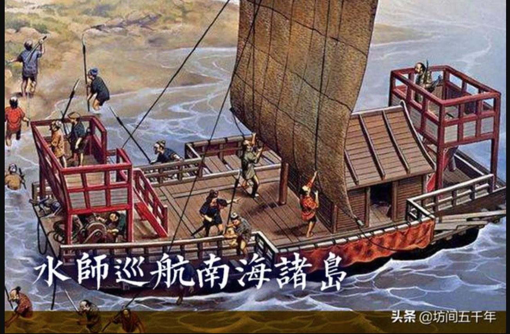
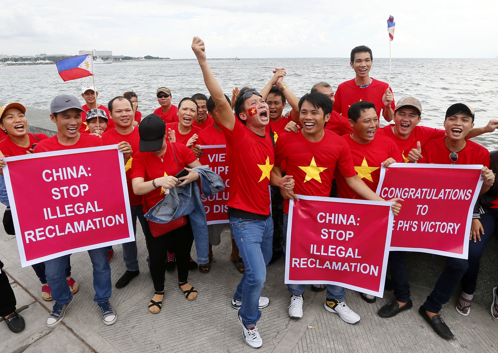

- What is the Chinese people's general perception of the PCA ruling, as far as its legal validity is concerned?
- How did the fact that the ruling was done by a tribunal with the authority of international law affect the Chinese people's perception on the ruling?
- What does the framing of the conflict in public discourse imply about popular legal consciousness?
Timeline
- Feb 2013: China announced it would not participate in the arbitration.
- Dec 2014: China published white paper explaining its position.
- Oct 2015: The Tribunal announced it has jurisdiction over the case.
- July 2016: The Tribunal ruled in favor of the Philippines. China dismissed the ruling.
Analysis
The role that law plays in Chinese society is a multifaceted one and depends on a variety of factors that arise from the unique sociopolitical configuration of the country. Upon hearing the ruing, which ruled against the interests of China, the Chinese population reacted in a way that highlighted their typical view on the relationship between law and society. On a general scale, it can be argued that the Chinese only follow the law when it is heli, or reasonable (Pia 277). This is noted in the Pia reading: “we follow reason, not the law”.
South China Sea has been Chinese territory throughout history, therefore it is only reasonable for the government to claim sovereignty. 
Tribunal ruling has been handed down; no sovereignty for China over South China Sea.
This was especially the case prior to the modernization of China under the leadership of CCP, and is still among the guiding principles in interpreting the Chinese perspective on law. Unreasonable laws should not be followed. Hence, with regard to conflict resolution through legal proceedings, it is crucial whether or not the laws themselves are reasonable; if they are not, then the rulings derived from them are not to be recognized, regardless of the authority and international status of the ruling body.
On the issue of the South China Sea, the Chinese government claims that “its rights and interests in the South China Sea are based on the practice of the Chinese people and the Chinese government in the long course of history and the position consistently upheld by successive Chinese governments”(Zhong 654). This is an attempt by the Chinese government to justify its refusal to recognize the tribunal ruling on the South China Sea. By taking a moral high ground and claiming that China is not doing anything other than minding its own business(because apparently the territory under debate has always belonged to them throughout history), China makes it sound reasonable to continue their claims over the region. This takes away any sense of aggressiveness in the popular perception of Chinese military advancement in the region and resonates with the aforementioned idea of not following the law but reason, which is deeply entrenched in the popular legal consciousness of the Chinese population. As said in Chinese state media, “不属于我们的土地，我们一寸也不要。但属于我们的领土，我们寸土不让” (any land that doesn’t belong to us, we don’t take one tiny bit; any land that does belongs to us, we will not give away one tiny bit). The historical basis to reinforce the Chinese claim for sovereignty is summarized in one influentical document issued by the CCP titled "Historical Evidence to Support China’s Sovereignty over Nansha [i.e., Spratly] Islands". The third paragraph of the document starts with the assumption that the disputed waters(and its associated islands) "have been under Chinese jurisdiction since the Yuan Dynasty (1271–1368), corroborated by patrol and inspection activities led by the navy"(Alessandro 1022). The document ends with the unequivocal statement that "China was the first to discover and develop the archipelago and put it under its jurisdiction and sovereignty"(Alessandro 1023). Grounded in historical facts(the accuracy of which is of course still under debate), the CCP's claim for for sovereignty over the disputed waters seems reasonable and lawful, as far as the collective consciousness of the Chinese population is concerned. On the other hand, this entire body of literature issued by the CCP is still under evaluation by the international scientific community. One main weakness about CCP's historical argument is that it refers to "a historical period, the imperial era, in which the whole concept of maritime sovereignty did not yet exist"(Alessandro 1022). This may sound like a sound argument to foreigners, but to the Chinese, this is most likely another nitpicky criticism that is not worthy of much consideration.
Another curious caveat is that the official stance of the CCP seems to 倒打一耙，claiming that they are not the ones who broke the law in this conflict, but it's instead the Phillipians who did:
菲做法不合法不守信不讲理
The CCP cited the international clause which outlaws compulsory arbitration(one that isn't agreed upon by both parties)
Portraying this ruling as unjust, unlawful and unreasonable may also have the side effect of contributing to "rising populist nationalism. ” (Sarah 69). In fact, in 2009, Chinese state media 新浪新闻 published an article which suggested that only 8 percent of Chinese Internet users who took the survey believed the dispute in the South China Sea shouldn't be resolved by force.
What does this all mean?
In a nutshell, Chinese people generally perceive of the ruling as invalid and therefore void, hence they do not acknowledge it or accept it. International law comes second to reason, which in this case is that the debated region has been Chinese territory throughout history and so the tribunal has no jurisdiction over it. Even putting reasonings aside, the arbitration itself is invalid because it is a compulsory one, which is illegal by international law.